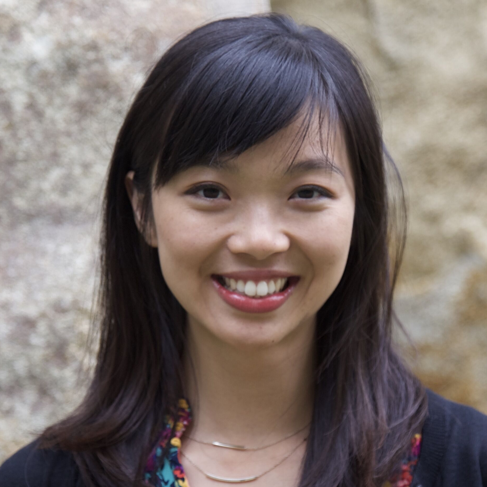
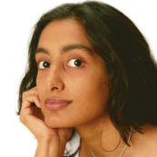

|  |
Judy Fan is an Assistant Professor of Psychology at the University of California, San Diego. The goal of her research is to reverse engineer the human cognitive toolkit, especially how people use physical representations of thought to learn, communicate, and create. Towards this end, her lab employs converging approaches from cognitive science, computational neuroscience, and artificial intelligence. |
 |
Leslie Kaelbling is a Professor at MIT. She has an undergraduate degree in Philosophy and a PhD in Computer Science from Stanford, and was previously on the faculty at Brown University. She was the founding editor-in-chief of the Journal of Machine Learning Research. Her research agenda is to make intelligent robots using methods including estimation, learning, planning, and reasoning. She is not a robot. |
|  |
Maithilee Kunda is an Assistant Professor of Computer Science and Computer Engineering at Vanderbilt University. Her work in artificial intelligence, in the area of cognitive systems, looks at how visual thinking contributes to learning and intelligent behavior, with a focus on applications for individuals on the autism spectrum. |
 |
Kimberly Stachenfeld is a neuroscientist at DeepMind studying computational neuroscience and machine learning. Her research focuses on (1) the neural mechanisms for learning relational structure in service of efficient reinforcement learning and (2) how to get machines to do something similar. |
 |
Laura Schulz is a Professor of Cognitive Science MIT, where she is the Principal Investigator of the Early Childhood Cognition Lab. She studies how our commonsense understanding of the physical and social world is constructed during early childhood by investigating 1) how children infer the concepts and causal relations that enable them to engage in accurate prediction, explanation, and intervention; 2) the factors that support curiosity and exploration, allowing children to engage in effective discovery and 3) how these abilities inform and interact with social cognition to support intuitive theories of the self and others. |